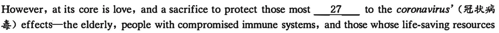
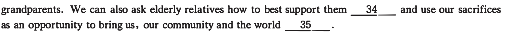
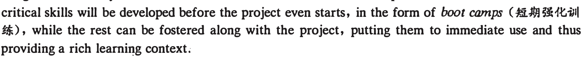
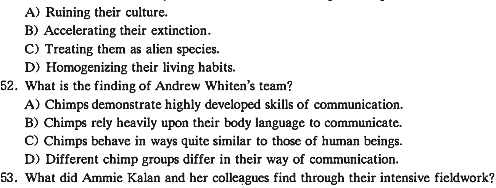
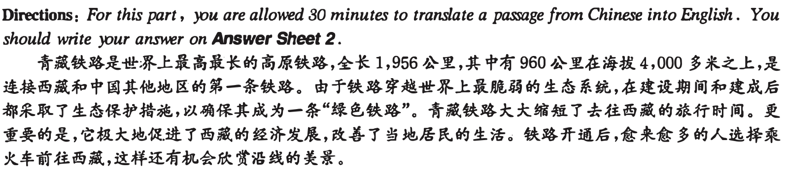

第 36 题 #
36. Students should develop the key skills before they start a project.
本页部分文字层异常，已保留原图文字区域；这些区域随窗口缩放，暂不能重新换行或复制。
大学英语六级 · questions · 2020
题号和章节目录由结构化数据生成。选项按卷面字母顺序显示；原标记保留在 JSON 中。
本页部分文字层异常，已保留原图文字区域；这些区域随窗口缩放，暂不能重新换行或复制。
2020年12月大学英语六级考试真题(三)
Directions: For this part , you are allowed 30 minutes to write an essay on why students should be encouraged to develop creativity. You should write at least 150 words but no more than 200 words.
Part l[ Reading Comprehension ( 40 minutes)
Directions: In this section, there is a passage with ten blanks. You are required to select one word for each blank from a list of choices given in a word bank following the passage. Read the passage through carefully before making your choices. Each choice in the bank is identified by a letter. Please mark the co"esponding letter for each item on Answer Sheet 2 with a single line through the centre. You may not use any of the words in the bank more than once.
Social distancing is putting people out of work, canceling school and tanking the stock market. It has been 26 by fear, and it is creating even more fear as money problems and uncertainty grow.

would be used up by a 28 epidemic.
Americans make life-saving decisions every day as a matter of course. We cut food into bite-sized pieces, we wear seatbelts, and we take care not to exceed the speed limit. But social distancing is
29 in that it is completely self-sacrificing. Those who will benefit may be the elderly relatives of the 30 person we didn't pass in Starbucks, on the subway, or in the elevator.
Social distancing is millions of people making hundreds of sacrifices to keep the elderly alive. It doesn't include the - 31-- to run from . society or make an excuse to avoid one's obligations-such as life-saving medical work or the parental obligation to buy groceries. What it does include is applying love through caution. And in doing so, it offers an 32 opportunity for those who care about the elderly to find new ways· to love them.
If we're not 33 as much in our normal work or school, we have extra time to call parents and

本页部分文字层异常，已保留原图文字区域；这些区域随窗口缩放，暂不能重新换行或复制。
statement contains information given in one of the paragraphs. Identify the paragraph from . which the information is derived. You may choose a paragraph more than once. Each paragraph is marked with a letter. Answer the questions by marking the corresponding letter on Answer Sheet 2.
A) Picture yourself at a college graduation day, with a fresh cohort (一群) of students about to set sail for new horizons. What are they thinking while they. throw their caps in the air? What is it with this thin sheet of paper that makes it so precious? It's not only the proof of acquired knowledge but plays into the reputation game of where you were trained. Being a graduate from Harvard Law School carries that extra glamour, doesn't it? Yet take a closer look, and the diploma is the perfect ending to the modem tragedy of education.
tragedy: time, action, and place. Students meet at the university campus (unity of place) for classes ( unity of action) during their 20s ( unity of time). This classical model has traditionally produced prestigious universities, but it is now challenged by the digitalisation of society-which allows everybody who is connected to the internet to access learning-and by the need to acquire skills in step with a fast-changing world. Universities must realise that learning in your 20s won't be enough; If technological diffusion and implementation develop faster, workers will have to constantly· refresh their skills.
C) The university model needs to evolve. It must equip students with the right skills and knowledge to compete in a world 'where value will be derived largely from human interaction and the ability to invent and interpret things that machines cannot' , as the English futurist Richard Watson puts it. By teaching foundational knowledge and up-to-date skills, universities wiH provide students. with the future-proof skills of.lifelong learning, not just get them 'job-ready'.
D) Some universities already play a critical role in lifelong learning as they want to keep the value of their
way to start this transformation process could be to go beyond the 'five-year diploma model' to adapt curricula to lifelong learning. We call this model the lifelong passport.
E) The Bachelor's degree could be your passport to lifelong learning. For the first few years, students would 'learn to learn' and get endowed with reasoning skills that remain with them for the rest of their lives. For instance, physics allows you to observe and rationalise the world, but also to integrate
predictions. Mathematics is the language used to formulate the laws of physics or economy, and to make rigorous computations that tum into predictions. These two disciplines natur'ally form the foundational pillars of education in technical universities.
F) Recent advances in computational methods and data science push us into rethinking science and engineering. Computers increasingly become principal actors in leveraging data to formulate questions, which requires radically new ways of reasoning. Therefore, a new discipline blending computer science, programming, statistics and machine learning should be added to the traditional foundational topics of mathematics and physics. These three pillars would allow you to keep learning complex technical subjects all your life because numeracy (计算) is the foundation upon which everything else is eventually built.
G) According to this new model, the Master of Science ( MSc) would become the first stamp in the lifelong learning journey. The MSc curriculum should prepare students for their professional career by allowing them to focus on acquiring practical skills through projects.
H) Those projects are then interwoven with fast-paced technical modules (模块) learned 'on-the-fly' and
本页部分文字层异常，已保留原图文字区域；这些区域随窗口缩放，暂不能重新换行或复制。
'at will' depending on the nature of the project. If, for instance, your project is developing an integrated circuit, you will have to take a module on advanced concepts in microelectronics. The most

I) In addition to technical capabilities, the very nature of projects develops social and entrepreneurial skills, such as design thinking, initiative taking, team leading, activity reporting or resource planning. Not only will those skills be actually integrated into the curriculum but they will be very important to have in the future because they are difficult to automate.
J) After the MSc diploma is earned, there would be many more stamps of lifelong learning over the years. If universities decide to engage in this learning model, they will have to cope with many organisational challenges that might shake their unity of place and action. First, the number of students would be unpredictable. If all of a university's alumni were to become students again, the student body would be much bigger than it is now, and it could become unsustainable for the campus in terms of both size and resources. Second, freshly graduated students would mix with professionally experienced ones. This would change the classroom dynamics, perhaps for the best. Project-based learning with a mixed team reflects the reality of the professional world and could therefore be a better preparation for it.
K) Sound like science fiction? In many countries, part-time studying is not exceptional: on average across OECD countries, part-time students in 2016 represented 20 per cent of enrolment in tertiary education. In many countries, this share is higher and can exceed 40 per cent in Australia, New Zealand and Sweden.
L) If lifelong learning were to become a priority and the new norm, diplomas, just like passports, could be revalidated periodically. A time-determined revalidation would ease administration for everybody. Universities as well as employers and employees would know when they have to retrain. For instance, graduates from the year 2000 would have to come back in 2005.
M) This could fix the main organisational challenges for the university, but not for the learners, due to
you to save your 'travel time', but it has its limits. So far, none of the major employers associated with online learning platforms such as Coursera and Udacity has committed to hire or even interview graduates of their new online programmes.
be the learner's responsibility, that of his employer, or of the state? For example, in Massachusetts, the healthcare professions require continuing education credits, which are carefully evidenced and documented. Yet the same state's lawyers don't require continuing legal education, although most lawyers do participate in it informally. One explanation is that technology is less of a factor in law than it is in healthcare.
0) Europe has many scenarios, but the French and Swiss ones are interesting to compare .. In France,
credited as you work. In Switzerland, lifelong learning is a personal responsibility and not a government one. However, employers and the state encourage continuing education either by funding parts of it or by allowing employees to attend it. P) Universities have a fundamental role to play in this journey, and higher education is in for a change.
Just like classical theatre, the old university model produced talent and value for society. We are not advocating its abolition but rather calling for the adaptation of its characteristics to meet the needs of today.
36. Students should develop the key skills before they start a project.
本页部分文字层异常，已保留原图文字区域；这些区域随窗口缩放，暂不能重新换行或复制。
37. By acquiring reasoning skills in the first few years of college, students can lay a foundation for lifelong learning.
38. The easy access to learning and rapid technological changes have brought the traditional model of education under challenge.
39. Unbelievable as it may seem, part-time students constitute a considerable portion of the student body in many universities across the world.
40. Some social and managerial skills, which are not easily automated, will be of great importance to students' future careers.
41. A new model of college education should provide students with the knowledge and skills that will make them more inventive and capable of lifelong learning.
42. A mixed student body may change the classroom dynamics and benefit learning.
43. The question of who will bear the cost of lifelong learning is a topic of constant debate.
44. To the traditional subjects of math and physics should be added a new discipline which combines computer science with statistics and other components.
45. Students who are burdened with family duties might choose to take online courses.
Directions: There are 2 passages in this section. Each passage is followed by some questions or unfinished statements. For each of them there are four choices marked A), B), C) and D). You should decide on the best choice and mark ihe corresponding letter on Answer Sheet 2 with a single line through the centre.
Questions 46 to SO are based on the r ollowing passage.
Why does social media trigger feelings of loneliness and inadequacy? Because instead of being real life, it is, for the most part, impression management, a way of marketing yourself, carefully choosing and filtering the pictures and words to put your best face forward.
• Online "friends" made through social ·media do not follow the normal psychological progression of an interpersonal relationship. You share neither physical time nor emotional conversations over the Internet. You simply communicate photographs and catchy posts to a diverse· group of people whom you have "friended" or "followed" based on an accidental interaction. This is not to say that your social inedia friends can't be real friends. They absolutely can, but the two are not synonymous. Generally speaking, there are no unfiltered comments or casually taken photos on our social media pages. And, rightfully so, because it wouldn't feel safe to be completely authentic and vulnerable with some of our "friends" whom we don't actually know or with whom trust has yet to be built.
Social media can certainly be an escape from the daily grind, but we must be cautioned against the
As humans, we yearn for social connection. Scrolling O$.#J) through pages of pictures and comments, however, does not provide the same degree of fulfillment as face to face interactions do. Also, we tend to idealize others' lives and compare our downfalls to their greatest accomplishments, ending in feelings of loneliness and inadequacy.
Social media can lead people on the unhealthy quest for perfection. Some people begin to attend certain events or travel to different places so that they can snap that "perfect" photo. They begin to seek validation through the number of people who "like" their posts. In order for it to play a psychologically healthy role in your social life, social media should supplement an already healthy social network. Pictures and posts should be byproducts of life's treasured moments and fun times, not the planned and calculated
Ultimately, social media has increased our ability to connect with various types of people all over the globe. It has opened doors for businesses and allowed us to stay connected to people whom we may not otherwise get to follow. However, social media should feel like a fun experience, not one that contributes
本页部分文字层异常，已保留原图文字区域；这些区域随窗口缩放，暂不能重新换行或复制。
to negative thoughts and feelings. If the latter is the case, increasing face to face time with trusted friends, and minimizing time scrolling online, will prove to be a reminder that your social network is much more rewarding than any "like," "follow" or "share" can be.
46. What does the author imply social media may do to our life?
47. Why do people post comments selectively on social media?
48. What are humans inclined to do according to the passage?
49. What is the author's view of pictures and posts on social media?
50. What does the author advise people to do when they find their online experience unconstructive?
Questions 51 to 55 are based on the following passage.
Imagine that an alien species landed on Earth and, through their mere presence, those aliens caused our art to vanish, our music to homogenize, and our technological know-how to disappear. That is effectively what humans have been doing to our closest relatives-chimps (大猩猩).
Back in 1999, a team of scientists led by Andrew Whiten showed that chimps from different parts of Africa behave very differently from one another. Some groups would get each other's attention by rapping

team identified 39 of these traditions that are practiced by some communities but not others-a pattern that, at the time, hadn't been seen in any animal except humans. It was evidence, the team said, that chimps have their own cultures.
It took a long time to convince skeptics that such cultures exist, but now we have plenty of examples of animals learning local traditions from one another.
But just when many scientists have come to accept the existence of animal cultures, many of those cultures might vanish. Ammie Kalan and her colleagues have shown, through years of intensive fieldwork, that the very presence of humans has eroded the diversity of chimp behavior. Where we flourish, their cultures. wither. It is a bitterly ironic thing to learn on the 20th anniversary of Whiten's classic study.
"It's amazing to think that just 60 years ago, we knew next to notJ.ting of the behavior of our sister
本页部分文字层异常，已保留原图文字区域；这些区域随窗口缩放，暂不能重新换行或复制。
cousins, the actions of humans are closing the window on all we have discovered."
"Sometimes in the rush to conserve the species, I think we forget about the individuals,'' says Cat Hobaiter, a professor at the University of St. Andrews. "Each population, each community, even each generation of chimps is unique. An event might only have a small impact on the total population of chimps, but it may wipe out an entire community-an entire culture. No matter what we do to restore habitat or support population growth, we may never be able to restore that culture. "
No one knows whether the destruction of chimp culture is getting worse. Few places have tracked chimp behavior over long periods, and those that have are also more likely to have protected their animals from human influence.
Obviously conservationists need to think about saving species in a completely new way-by preserving animal traditions as well as bodies and genes. "Instead of focusing only on the conservation of genetically based entities like species, we now need to also consider culturally based entities," says Andrew Whiten.
51. What does the author say we humans have been doing to chimps?

52. What is the finding of Andrew Whiten's team?
53. What did Ammie Kalan and her colleagues find through their intensive fieldwork?
54. What does Cat Hobaiter think we should do for chimp conservation?
55. What does the author suggest conservationists do?
Part 1V Translation ( 30 minutes)
